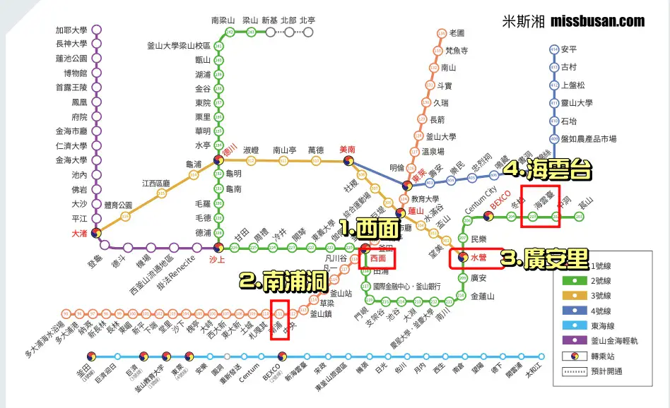

Busan
五日慢旅
Anita × 小魚 · 首次韓國
廣安里 → 南浦 兩段住宿
✈️ 班機
08:15→11:30
台北 TPE → 釜山金海 PUS
7/20（一）· 星宇航空 JX900
⚠️ 05:00 從淡水出發 · 06:15 前到機場
去程 · 訂位代號 EF3EN6
14:55→16:15
釜山金海 PUS → 台北 TPE
7/24（五）· 星宇航空 JX901
⚠️ 11:00 前退房 · 線上報到 7/22 14:55 起開放
回程
🎫 旅客資訊
Anita（KUO MENG CHIA）· 票號 189-2613746513
小魚（TSAI YU YEN）· 票號 189-2613746514
🧳 行李額度（每人）：個人物品 1件 + 手提 1件（合計 7kg）· 托運 1件 23kg
✈️ 線上報到：去程 7/18 08:15 起開放，報到截止 7/20 07:15
🏨 住宿
🌊
Day 1–2 · 7/20–7/22 · 2晚
霍默斯飯店 Homers Hotel
廣安里海邊路 217 · 廣安大橋正對面
Trip.com 訂單 1616332118308635
飯店確認號碼：26340825
Check-in 15:00退房 11:00🌉 海景
🏙
Day 3–5 · 7/22–7/24 · 2晚
布林東方貝門 The Bayment Bling Eastern
中區 중구로 5번길 14 · 南浦洞
BIFF廣場步行 <100m · Trip.com 4.8分
Trip.com 訂單 1616331424870921
⚠️ 免費取消期限：7/17 23:59 前
Check-in 16:00退房 11:00🌊 海景🍳 廚房🫧 洗衣機
🚕 計程車費總覽
| 行程 | 費用 |
|---|
| 廣安里→尾浦（Day 2） | KRW 10,000–13,000 |
| 尾浦→廣安木→新世界→廣安里（Day 2） | KRW 21,000–28,000 |
| 廣安里→南浦換飯店（Day 3） | KRW 12,000–17,000 |
| 南浦→機場（Day 5） | KRW 14,000–18,000 |
| 合計 | KRW 60,000–78,000
約 TWD 1,380–1,800 |
⚠️ 布林東方貝門無實體前台，密碼自助入住。自備牙刷牙膏，有問題訊息聯絡房東。
🚇 釜山地鐵路線圖

📍 1. 西面（1＋2號線交會）·
2. 南浦洞（1號線）·
3. 廣安里（水營站，2號線）·
4. 海雲台（2號線）
圖片來源：米斯湘 missbusan.com
⚠️ 05:00 出發
🚗 淡水 → 機場（爸爸送）
班機 08:15，需 06:15 前到機場。前一晚把行李整理好，不要讓爸爸等太久 😊
08:15 起飛 · 11:30 落地
✈️ 金海機場入境
入境後：便利商店買 T-money 卡各一張儲值 ₩30,000，換 ₩200,000 現金。叫 Uber/Kakao T 直達 Homers Hotel。
🚕 KRW 23,000–30,000（約 TWD 530–690）
13:00 左右
🏨 行李寄放 · 輕裝出門
Check-in 15:00，先寄放行李，推開門就是廣安里海灘。
下午 · 步行即達
🍜 백일평냉 平壤冷麵（米其林）
廣安里米其林名店，成始璄必推。7月大熱天吃冷麵最對。⚠️ 13:00 左右人潮多要排隊，休息 15:30–17:30。
🍜 冷麵⭐ 米其林
下午 · 全程步行
🚶 廣安里海邊路慢逛
· Working Holiday（3分）海景咖啡廳
· ORANGEPADA（5分）紀念品＋明信片郵筒
· panier（4分）質感選物，12:00開
· Millac the Market（10分）複合廣場，傍晚最美
· 民樂水邊公園（18分）免費，坐著看廣安大橋
☕ 咖啡🛍 小店📸 拍貼
15:00
🏨 Check-in Homers Hotel
放行李、洗澡，推開窗就是廣安大橋。
18:30–20:00
🍗 돌닭 광안점 石板辣炒雞
步行 5 分鐘。燒熱石板上桌，甜辣可選辣度，剩醬汁加飯炒是隱藏吃法。⚠️ CATCHTABLE app 可遠端候位。
🍗 石板雞🌶 辣度可選
餐後
🌉 廣安大橋夜景
便利商店買飲料，坐海邊吹風看燈光秀——就在飯店門口。
✨ 廣安大橋🌙 輕鬆
💡 今天重點落地後整個下午廣安里隨意逛，沿海邊路往東走，走累就坐下來，不用趕任何地方。
⚠️ 早班機 08:15，前一晚要整理好行李，05:00 出門不能賴床。
早上
☕ All Sunday Bagel
飯店步行 3 分，8 點開門。Q 彈貝果外帶坐海邊吃。
🥯 排隊貝果
13:00–15:30
😌 回飯店休息
7月下午最熱，吹冷氣補充體力，傍晚還有膠囊列車。
17:00 出發
🚕 廣安里 → 尾浦站
暑假旺季排隊人多，17:20 到站。目的地：해운대 블루라인파크 미포역
🚕 KRW 10,000–13,000
⚠️ 18:00 報到
🚡 膠囊列車（尾浦→青沙浦）
二樓刷 QR Code，超 30 分鐘不退款。靠海外側視野無遮蔽，30 分鐘車程。18:30 到青沙浦，日落約 19:35 等夕陽。
🚡 2人 KRW 50,000
🎡 膠囊列車🌅 夕陽
19:00
🚂 海岸列車回尾浦
現場換票，有冷氣全座位面海，約 10–15 分鐘。
🌊 海景列車
19:20 · 計程車約 10 分
🥩 광안목 廣安木 乾式熟成烤肉
海雲台구남로，乾式熟成豬五花，桌邊代烤。平日 16:30 開門，最後點餐 22:30。
🚕 尾浦→廣安木：KRW 5,000–7,000
🥩 乾式熟成🔥 代烤
21:15 · 計程車約 10 分
🏬 新世界百貨 → Spa Land
先辦 3F 外國人會員卡（95折），再去 1F Spa Land（Dior 和 Prada 中間）。⚠️ 週一公休（7/21 週二✓）最晚 22:00 入場，23:00 關門。
🚕 廣安木→新世界：KRW 6,000–8,000 · ♨️ 約 KRW 20,000
♨️ 溫泉😌 放鬆
23:00
🚕 回 Homers Hotel
🚕 新世界→廣安里：KRW 10,000–13,000
💡 今天唯一要卡緊的17:00 出發，17:20 到尾浦排隊，18:00 膠囊列車報到。
⚠️ 膠囊列車憑證：開 KKday App 出示 QR Code，不能截圖。訂單 26KK288410445。
早上
☕ 廣安里最後早餐
最後一個廣安里早晨，找間咖啡廳看最後一眼廣安大橋。
⚠️ 11:00 前退房
🧳 換飯店 → 布林東方貝門（南浦）
叫 Uber 帶行李直達南浦飯店。Check-in 16:00，先寄放行李，搭地鐵去西面追星。
🚕 廣安里→南浦：KRW 18,000–24,000（約 TWD 415–555）
地鐵 · 約 15 分
🚇 南浦站 → 西面站
1號線直達，不用換車。到西面先吃午餐再追星。
🚇 2人共約 KRW 2,800
午餐 · 西面步行即達
🍜 안목돼지국밥 安木豬肉湯飯
西面在地老字號，湯頭濃郁，份量實在。
🥣 老字號
下午 · 西面站步行可達
🎵 교보문고 教保文庫（HOTTRACKS 專櫃）
買新專輯首選，一整面牆最新 K-POP 發行，官方應援手燈也有。可在現場直接辦退稅，不用另外跑退稅窗口。
💜 TXT🔦 手燈💰 現場退稅
下午 · 西面地下街
🎵 POWER STATION
釜山老字號唱片專賣店。剛發行新版可能有店鋪預購特典卡，值得問一下。Weverse Albums 版也容易找到。
💜 特典卡📀 Weverse
順路 · 田浦洞（西面旁）
🎵 SD Media（挖寶必去）
沿田浦咖啡街散步過來。大量絕版、舊版 TXT 專輯與早期周邊，補齊收藏的 MOA 不能錯過。
💜 絕版🕰 舊版☕ 田浦咖啡街
下午 · 西面
🎵 일상의틈 by U+
不定期限定品，出發前查 IG 確認是否有活動。
💜 限定品
傍晚 · 西面吃完再回
🍽 西面晚餐
西面商圈隨便走都有選擇，吃完搭地鐵回南浦，不用空腹回飯店。
🍽 晚餐
晚間 · 地鐵約 15 分
🚇 西面 → 南浦 · 布林東方貝門 Check-in
1號線直達回南浦，辦理入住，衣服丟進洗衣機。
💡 今天節奏退房→南浦放行李→地鐵去西面追星→西面晚餐→地鐵回南浦 Check-in。行李不用拖著跑，動線清楚。
睡到自然醒
☕ 早午餐
廚房解決早餐，或南浦洞附近咖啡廳，悠閒吃完下午再出發。
下午出發
🎨 甘川洞文化村
彩色小屋山城，蓋章闖關、拍壁畫、鑽小巷。⚠️ 一定要搭公車上山，7月夏天爬坡又熱又累。店家多至 18:00，14:00 前到最剛好。
🚇 交通方式：
南浦站（1號線）→ 土城站（토성역）一站約 3 分鐘！比從西面出發還近
土城站 6號出口 → 走 3 分鐘到「부산대학병원」站牌
搭 서구2번 或 61번 公車 → 甘川洞文化村入口（감정초등학교）下車，約 10 分鐘
⚠️ 暑假旺季公車很擠，早點到站牌排隊
🔙 下山回南浦洞：
在「감정초등학교」站牌搭同班公車下山 → 到札嘎其站（자갈치역）下車
→ 轉地鐵 1號線一站 → 南浦站（남포역）到達
🚇+🚌 2人共約 KRW 4,000
🏘 彩色村📸 拍照
傍晚 / 晚間
🎵 南浦洞追星
甘川洞下山→地鐵→南浦/扎嘎其站，約 25–35 分鐘。
🚌+🚇 2人共約 KRW 4,000
南浦洞 K-POP 採購
🎵 BIFF 廣場周邊三間店
首選
KPOP FRIENDS 南浦店
整面牆單售小卡區，依成員分類（秀彬・然竣・杋圭・太顯・休寧凱），省去盲抽麻煩，稀有卡依市場價波動。
現場也有官方＋非官方周邊，有機會挖到 PPULBATU 玩偶衣服、吊飾、氣氛燈等。
老字號
I LOVE MUSIC
扎嘎其站 7號出口 · 專輯官方品
夜晚 · 晚餐參考
🍖 미친막창 본점（瘋腸本店）烤豬腸
南浦洞광복로16-2，BIFF廣場步行約 3 分鐘。整條街只有這家生意最旺，豬腸＋肥腸半半套餐最推薦，附特製醬汁超搭。免費附拉麵和剉冰！
⚠️ 每天 16:00 開門，營業到凌晨 2:00，排隊是常態。
🍖 烤豬腸🍜 免費拉麵🍧 免費剉冰
夜晚
🥞 BIFF 廣場 · 호떡 黑糖餅
要排隊但值得，廣場很熱鬧，吃完盡興再回飯店。
🥞 黑糖餅
回飯店後
🧳 整理行李
明天 11:00 前退房，今晚要打包。行李全免費，清點戰利品。
💡 今天節奏從飯店走路出去就是 BIFF 廣場。早上輕鬆出發→甘川洞→下山回南浦追星→烤豬腸→黑糖餅，整天不用跨區。
早晨
🎵 일상의틈 by U+（最後補漏）
出發前查 IG 確認是否有限定品活動。
💜 TXT
早上
🛍 西面最後掃貨
Olive Young 最後一輪，便利商店買蝦餅、紫菜、泡麵。T-money 餘額在便利商店刷掉，帶回台灣沒法用。
🎁 伴手禮🧴 Olive Young
⚠️ 11:00 前
🏨 布林東方貝門退房
比一般飯店早一小時，確認沒有遺漏。
11:00 出發
🚕 布林東方貝門 → 金海機場
班機 14:55，計程車直達最保險。約 30–35 分鐘，12:30 前到機場很充裕。
🚕 KRW 17,000–20,000（約 TWD 390–460）
14:55 起飛 → 16:15 落地
✈️ 回台灣
帶著一行李箱戰利品、TXT 周邊，和第一次韓國的記憶，回家。
🚕 機場→淡水：約 TWD 1,100–1,300
💡 今天最重要11:00 退房是底線，班機 14:55 時間很寬裕，不要為了最後一件周邊趕不上飛機。